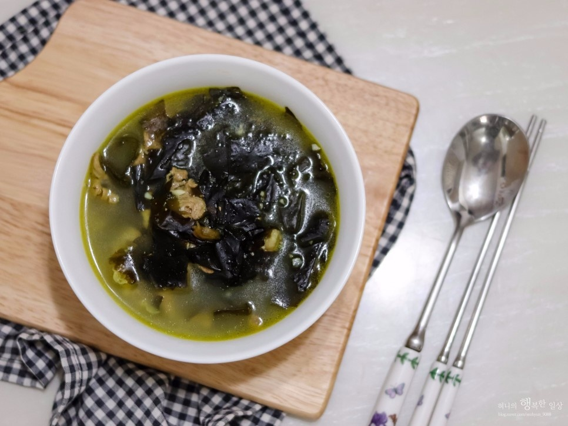

돼지김치찌개
재료
돼지고기, 김치, 양파, 대파, 양념
요리 순서
- 돼지고기에 위에 분량의 양념을 넣고 조물조물 무쳐 주세요.
- 냄비에 양념된 돼지고기를 넣고 볶아줍니다.
- 고기가 익으면 김치를 넣고 나른해질때까지 볶아줍니다.
- 센불에서 물600ml(3컵분량)를 넣고 팔팔 끓으면 약불로 줄여 20분 정도 느긋하게 더 끓여 주세요 (멸치육수나 쌀뜨물,사골육수를 넣으면 더 깊은맛이 납니다.)
된장찌개

재료
두부, 양파, 애호박, 양념
요리 순서
- 재료를 준비합니다.(두부, 쌀뜨물, 다시마, 양파, 애호박, 고춧가루, 쌈장, 된장)
- 우선 양파를 작은 큐브모양으로 썰어줍니다.
- 애호박도 같은 크기로 썰어주세요!(버섯이나 다른 재료를 더 추가하셔도 좋아요.)
- 냄비에 썰어둔 호박, 양파, 다시마를 넣어줍니다. 쌀뜨물도 넣어주세요.
- 물이 끓으면 다시마는 건져서 버려줍시다.
- 거품은 미관상 살짝 걷어주시면 좋아요.
- 야채가 거의 익으면 양념들을 모두 넣어줍니다.
(양념 재료 : 된장 3T, 쌈장 3T, 고춧가루 2T) - 마지막에 두부를 넣어줍니다.
- 두부가 위로 떠오르면 완성!
크림파스타
재료
올리브유, 베이컨, 흰우유, 마늘, 양파. 파스타면, 체다치즈, 양념
요리 순서
- 베이컨과 양파를 먹기 좋은 크기로 썬다.
- 물에 소금을 약간 넣어 팔팔 끓여 파스타면을 2분정도 삶아준다.
(500원짜리 동전크기 : 1인분) - 새 프라이팬에 올리브유를 넣고 다진마늘을 넣고 볶는다.
- 마늘이 볶아지면 양파와 베이컨을 넣는다.
- 파와 베이컨이 볶아지면 우유를 넣고 보글보글 끓여주고, 체다치즈 2장을 넣고 후추와 소금으로 간을 한다.
- 면을 넣고 같이 볶아준다. 완성!
차돌숙주볶음
재료
차돌박이, 숙주, 마늘, 대파, 양념
요리 순서
- 간장 1T, 굴소스 1T, 설탕 1/2T, 맛술(미림) 1T, 참기름 1T을 넣어 고기 양념을 만들어 주세요.
- 팬에 기름을 두르고 다진마늘을 넣어 향과 맛이 돋구어지도록 볶아주세요.
(편마늘을 넣어주셔도 된답니다) - 여기에 차돌박이를 넣어 반쯤 익었을때 후추를 넣어주세요.
- 숙주, 대파와 양념을 넣고 센불에 30초간 빠르게 볶아주셔야 아삭한 맛을 느낄 수 있어요.
- 양념이 골고루 어울러지도록 휘리릭 볶아주세요.
- 숨이 죽으면 참기름 1스푼을 넣고 살짝 볶은 후 마무리
오이피클
재료
오이, 양배추, 파프리카, 양념
요리 순서
- 물을 끓이고 식초, 설탕, 소금을 넣습니다.
(물:식초:설탕 비율은 2:1:1로 소금은 적당히 넣어서 간을 맞추면 됩니다.) - 재료들은 먹기좋게 잘라서 골고루 섞어주세요.
- 유리병에 야채들을 담고 뜨거운물을 부어주시고, 식으면 냉장고에 넣어서 드시면 됩니다!
알탕
재료
곤이, 대파, 새우, 이리, 청양고추, 무, 육수팩
요리 순서
- 무는 나박 썰기, 대파, 청양고추 어슷썰기. 알과 곤은 깨끗하게 씻어줍니다.
알은 소금물에 담가 살살 풀어준 후 헹구어 준비하시면 됩니다.
(냉동상태라면 해동 후 소금 한 큰 술 푼 물에 잠깐 담갔다가 헹구어 비린 맛도 제거해보세요.) - 육수팩을 넣어 육수를 끓이고, 무를 넣어 더 끓여주세요.(최소 10분은 끓여서 준비해주세요.)
- 다진 마늘 1큰술, 고춧가루 3큰술, 미림 1큰술, 참치액 혹은 액젓 2큰술을 넣습니다.
(참치 액이나 액젓 대신 국간장을 쓰셔도 좋아요.) - 무가 반 정도 익으면 만들어둔 알탕양념장 한 큰술 넣어습니다.
- 곤이을 먼저 넣고 팔팔 끓으면 이리도 넣어주세요. 나머지 양념도 모두 넣어줍니다.
- 어슷어슷 썰어둔 대파를 넣고, 얼큰하게 즐기기 위해 청양고추도 하나 넣어줍니다. 완성!
부추무침
재료
부추, 양파, 양념, 마늘
요리 순서
- 양파는 얇게썰어 물에담가(30분정도) 매운끼를 빼고 준비해 둡니다.
- 부추는 3-4등분 하여 주세요.
- 간장,고추가루,식초,설탕,마늘,들기름을 잘 섞어 양념장을 만들어줍니다.
- 부추, 양파에 양념장을 잘 무쳐주어 깨를 뿌리면 완성.
돼지고기제육볶음
재료
돼지고기, 양파, 청양고추, 대파, 양념, 마늘
요리 순서
- 재료를 준비하고 양념재료를 모두 넣어주세요.
- 대파와 청양고추는 어슷썰어주고 양파는 1cm 두께로, 돼지고기는 한입크기로 썰어주세요.
- 만들어둔 양념장을 고기에 넣어 버무려주세요.
(양념 후 바로 볶아도 되지만 냉장고에 30분정도 두어 숙성시켜주면 양념이 베어 더욱 맛있습니다.) - 팬에 식용유 2큰술과 대파를 넣고 강불로 3분정도 볶아 파기름을 내주세요.
- 양념한 고기를 넣고 중불로 볶다가 양파와 청양고추를 넣어주세요.
- 마지막으로 통깨를 뿌려주면 완성입니다!
콩나물불고기
재료
대패삼겹살, 대파, 콩나물, 양념, 마늘
요리 순서
- 파를 큼직하게 썰어줍니다.
- 양념을 모두 넣고 섞어주세요.
(고추장 5숟가락, 고춧가루 4숟가락, 간장 2숟가락, 설탕 3숟가락, 다진 마늘 2숟가락) - 팬에 고기, 콩나물을 넣고 볶아줍니다.
- 만들어둔 양념을 넣고 잘 섞어줍니다.
- 콩나물에서 물이 나오면 중불로 높여 볶아주세요.
- 대파를 넣고 한번 더 볶아주면 완성!
오징어볶음

재료
오징어, 양파, 파, 마늘, 양념
요리 순서
- 모든 재료를 총총썰어 준비해 둡니다.
- 후라이팬에 기름을 두르고 파를 볶아줍니다.
- 파가 향기를 풍기면서 볶아지면 오징어를 넣어줍니다.
- 양념을 순차적으로 넣습니다.
(설탕, 마늘 1큰술, 고춧가루 4큰술, 고추장 1큰술, 간장 5~6큰술) - 모든재료를 잘 섞어줍니다.
- 물을 반컵조금 못되게 조금만 부어주세요.
- 야채를 몽땅 넣고 볶아주면 완성!
간장찜닭
재료
닭볶음탕용닭, 감자, 양파, 당근, 마늘, 양념
요리 순서
- 먼저 감자 껍질을 벗기고 굵게 썰어줍니다.
- 모서리를 돌려깎아주세요(익었을 때 뭉개짐 방지)
- 당근도 적당하게 썰어 돌려깎기 해줍니다.
- 양파도 먹기 좋게 썰어줍니다
- 닭을 한번 데쳐줍니다.
- 겉의 색이 변하면 물을 버리고 헹궈주세요.
- 준비한 양념, 물을 모두 넣어주세요.
- 야채들도 다 넣어줍니다.
- 양파는 원래 뒤에 넣는 게 좋은데 (당근과 감자보다 빨리 익기 때문) 저는 물렁물렁한 양파를 좋아해서 같이 넣었어요. 살짝 아삭한 식감이 남아있는 양파가 좋으시면 마지막에 파를 넣는 부분쯤 넣으세요.
- 중약불에서 보글보글 끓여줍니다.
- 파는 예쁜 색을 위해 마지막에 넣어줬어요! (생략가능)
- 국물이 조금만 남을 때까지 조려주면 완성!
소고기무국

재료
소고기, 무, 대파, 마늘, 양념
요리 순서
- 소고기는 찬물에 10분정도 담가 핏물을 제거해주세요.
- 무는 네모지게 토막 썰어주세요.
- 두께는 0.5cm정도로 너무 두껍지 않고 너무 얇지 않은 두께로 준비해주세요.
- 대파 1대는 큼직큼직 어슷 썰어주세요.
- 참기름 1큰술을 넣어준 후 고기를 넣고 겉면의 색이 변할 때까지 볶아주세요.
- 고기가 갈색으로 변하면 무를 넣어 준 후 살짝 투명해질때까지 볶아주세요.
- 무와 고기가 잘 볶아지면 물을 넣고 중불로 끓여주세요.
- 위에 생기는 거품은 걷어내주세요.
- 국간장 2큰술, 소금 1작은술, 다진마늘 1/2큰술, 설탕1/2큰술을 넣어 간을 해주세요.
- 중불로 20분간 보글보글 끓여준 후 대파와 후추를 톡톡 뿌려주면 완성!!
닭갈비
재료
닭다리살, 양파, 파, 깻잎, 고구마, 당근, 양념
요리 순서
- 야채들을 썰어서 준비합니다.
- 모든 양념장을 한데 섞어주세요.
- 팬에 기름을 살짝 두르고 닭과, 양념장은 1/3만 남기고 모두넣어 볶아주세요. (불을 중불로 쎄지 않게 볶아야 고기가 타지 않아요.)
- 고기의 겉면이 익으면 양파, 당근, 양배추, 고구마를 넣고 볶아주세요.
- 고기가 반정도 익고 양파가 투명해질 정도로 볶았으면 물 한컵, 남은 양념을 넣고 고기가 속까지 잘익도록 해주세요.
- 국물이 어느정도 졸아들면 대파와 떡을 넣고 볶아주세요.
- 국물이 다 졸아들고 기름이 겉돌때까지 충분히 볶은 뒤에 깻잎을 올리고 불을 꺼주시면 완성입니다.
가지볶음
재료
가지, 양파, 대파, 마늘, 양념
요리 순서
- 먼저 가지를 먹기좋게 썰어주어요.
- 양파는 채썰고, 파와 고추는 너무 얇지않게 쫑쫑 썰어주세요.
- 분량의 양념장을 만들어 주세요.
(간장 2큰술,굴소스 1큰술,설탕 1큰술,다진마늘 0.5큰술, 고추가루0.5큰술) - 넉넉하게 기름을 두른 팬에 파를 먼저 넣고 볶아서 파향을 내어 줍니다.
- 파가 노릇해질때 가지와 양파를 넣고 계속 볶아주어요.
- 가지가 어느정도 익으면 양념장을 넣고 양념이 잘 베이도록 볶아줍니다.
- 완성무렵에 참기름 1큰술 휘리릭~ 둘러주고, 고추도 넣어줍니다.
- 마지막으로 통깨 0.5큰술을 뿌리면 완성!
장어구이
재료
장어, 마늘, 생강, 양념
요리 순서
- 장어에 등 쪽에 칼집을 내어줘요. 준비한 분량의 장어 소스를 한번 끓여서 준비해주세요.
- 집에서는 간단하게 생선 굽는 팬에서 손질된 장어를 초벌구이 해주세요. 초벌구이 할 때 양념을 발라서 구워주면 익기도 전에 다 타버린답니다.
- 두번째 구울 때 양념을 발라주고 타지 않게 앞뒤로 소스를 발라주면서 구워주세요.
- 완성된 장어구이를 접시에 담아내고 통깨를 뿌려줍니다.
꽃게탕
재료
꽃게, 양파, 호박, 대파, 청양고추, 양념
요리 순서
- 꽃게를 손질합니다.
- 양파, 호박, 대파, 청양고추를 썰어서 준비합니다.
- 고추장, 집된장, 고춧가루, 소금, 국간장, 다진마늘을 잘 섞어서 양념장을 만들고 물1000ml를 끓인후에 준비해놓은 양념장을 풀어줍니다.
- 그런다음, 준비해놓은 꽃게와 양파, 호박을 넣고 5분가량 끓여줍니다.
- 끓이는 중간중간에 거품은 거둬 내고 마지막에 대파와 청량고추를 넣고, 살짝 한번 더 끓여주면 완성입니다.
새우필라프
재료
새우, 대파, 양파, 고추, 마늘, 계란, 양념
요리 순서
- 제일 먼저 재료들을 손질해줍니다.
- 팬을 약불에 올려주신 뒤 버터 1조각을 넣어줍니다.
- 버터가 녹으면 대파와 마늘을 넣고 버터에 볶아주세요.
- 중간에 기름 1큰술 정도 넣어주세요.
- 마늘과 파의 향이 올라오고 색이 변하기 시작하면 양파를 넣고 같이 볶아줍니다.
- 양파의 색이 투명해질 때쯤, 호박과 고추를 넣고 같이 볶아주세요.
- 호박과 고추가 익어갈 때쯤, 버섯과 새우를 넣고 볶아줍니다.
- 새우의 색이 붉어지면 밥을 넣고 볶아주세요.
- 팬의 바닥 면에 간장 1큰술을 넣고 간장을 살짝 태워준 후, 밥을 다시 볶아줍니다.
- 굴소스 1큰술과 올리고당 1큰술을 넣고 볶아주시면 완성입니다.
- 마지막으로 계란 후라이와 마요네즈를 뿌려주시면 정말 완성이에요.
무생채무침
재료
무, 대파, 마늘, 양념
요리 순서
- 무를 채를 썰어서 소금 1/2큰술을 넣고 섞어주세요. 그리고 바로 양념 준비해서 넣어줍니다.
- 분량의 액젓, 고추가루, 통깨, 설탕, 다진마늘, 송송 썬 파를 넣고 골고루 버무려 줍니다. 기호에 맞게 액젓과 고추가루 양은 가감하세요.
고등어무조림
재료
고등어, 무, 대파, 양념
요리 순서
- 무와 대파는 흐르는 물에 씻은 후 무는 도톰하게 반달 썰어 주고 대파는 어슷 썰어 줍니다.
- 고등어는 흐르는 물에 깨끗하게 씻어 줍니다.
- 분량의 양념장 재료 진간장, 고추장, 고춧가루, 매실액, 맛술, 올리고당, 다진 마늘, 후춧가루를 넣어 고루 섞어서 양념장을 만들어 줍니다.
- 냄비 바닥에 무를 깔고 씻어 놓은 고등어를 올린 후 대파를 얹어 주고 양념장을 끼얹어 준 다음 물을 부어 줍니다.
- 가스 불에 올려 센 불에서 끓여 주다가 한소끔 끓으면 불을 줄이고 간이 고루 배도록 중간 중간 양념장을 끼얹어 주면서 조려 줍니다.
간장진미채볶음
재료
진미채, 마요네즈, 양념
요리 순서
- 진미채는 가위를 이용해 적당한 크기로 자른뒤 마요네즈를 넣어 잘 무쳐줍니다.
- 간장,굴소스,맛술,설탕,다진마늘을 넣어 잘 섞어줍니다.
- 팬에 소스를 넣은뒤 약불로 하여 살짝 익혀줍니다.
- 진미채를 넣어줍니다.
- 약불로 1분여 잘 볶아줍니다.
- 불을 끈뒤 올리고당을 넣어 잘 섞어줍니다.
- 마지막으로 깨를 넣어 한번더 섞어주어 주어 완성.
소고기미역국

재료
소고기, 건미역, 양념
요리 순서
- 미역은 20분간 불린후 물기를 꼬옥 짜서 놔둡니다.
- 소고기는 국간장(0.5)과 후춧가루(0.1)를 넣어 살짝 밑간을 합니다.
- 미역에 들기름(1)를 넣고 미역의 진액이 나올때까지 (약3~5분정도) 빨래빨듯 빡빡 주물러주세요.
- 이제 냄비에 들기름(1)을 두르고 준비한 미역을 넣고 약불에서 볶아주세요.
- 밑간을해둔 고기도 같이 볶아주세요.
- 고기 겉면의 색깔이 익은것처럼 변하면 물(6컵)을 넣고 뚜껑을 열고 쎈 불에서20분간 끓여주세요.
- 이제 국간장(1), 까나리액젓(1), 다진마늘(0.5~1), 후춧가루(0.2), 소금(간보시고 기호대로 가감)을 넣고 한소끔만 더 끓여주세요.
부대찌개

재료
햄, 돈다짐육, 체다치즈, 양파, 대파, 마늘, 양념
요리 순서
- 길쭉이 햄과 통조림 햄은 적당한 크기로 잘라서 준비해주세요.
- 대파와 양파도 비슷하게 채썰어 준비합니다.
- 준비한 재료를 끓일 냄비에 차곡차곡 담아주고 돈다짐육 한줌과 송송 썬 김치도 한줌 넣어줍니다.
- 사골곰탕국물 한팩을 넣어주고 분량의 양념을 모두 넣어 만든 양념장도 냄비에 넣습니다.
- 육수가 끓기시작하면 다진마늘을 듬뿍 국자에 떠서 양념과 재료들이 잘 섞이도록 저으며 끓여주세요.
- 마지막 노랑 체다치즈도 한장 넣어준 후 부족한 간은 소금으로 해주시면 완성!
꼬막무침
재료
꼬막, 고추, 쪽파, 양념
요리 순서
- 장갑을 끼고 소금물에 조개를 넣고 바락바락 씻어주세요 (처음에는 모래나 껍질등이 나오다가3~4번 씻다보면 깨끗한 물이 나옵니다.)
- 바닷물과 비슷하게 만든 소금물에 조개를 넣고 까만봉지나 호일을 덮어 어둡게 만들어주면 안에 있던 뻘을 뱉어냅니다.(3시간 이상이 좋아요)
- 꼬막을 데칠때는 물이 끓으려고 할때, 꼬막을 넣고 15바퀴정도 젓가락을 이용해 같은 방향으로 저어주세요. (그래야 꼬막살이 한쪽으로 붙어습니다.)
- 데칠때 간장1T, 청주나 소주1T를 넣어줍니다.
- 꼬막 세개쯤 입을 열면 조개만 잘 건져주세요. (찬물에 헹구면 안됩니다!)
- 분량대로 양념장을 만들어주세요.
- 꼬막은 뒤쪽으로 숟가락을 넣고 비틀어서 껍질을 까주세요. 그런다음 꼬막에 양념장을 올려주면 완성! >
메추리알장조림
재료
메추리알, 꽈리고추, 마늘, 양념
요리 순서
- 냄비나 웍에 모든 재료를 다 넣어주세요.
- 불을 쎈불로 켜고 바글바글 끓고나서 1분 정도 더 졸여주면 완성!
코다리조림
재료
코다리, 무, 대파, 양파, 양념
요리 순서
- 코다리 손질을 합니다. (지느러미, 아가미 모두 떼어냅니다.)
- 마늘, 무, 양파, 건고추, 대파 준비합니다.
- 작은 볼에 코다리 양념을 만듭니다. (다진 마늘, 생강 1큰술, 진간장 3/4컵, 올리고당 1/3컵, 고춧가루 7큰술, 미림 1/3컵, 물 1컵)
- 코다리에 부어서 양념을 섞어줍니다.
- 준비한 양파는 모두 넣고 대파는 파란 부분은 조금 남기고 모두 넣어 섞어줍니다.
- 무는 팬 바닥에 깔아주고 모두 올려서 보글보글 끓을 때 뚜껑을 덮어서 졸여주면 완성!
감자탕
재료
돼지등뼈, 감자, 배추, 깻잎, 양념
요리 순서
- 돼지 등뼈는 핏물을 잘 빼서 준비합니다. (생고기는 1시간 이상, 냉동은 3~4시간 이상 꼭 핏물을 제거해주세요 저는 30분에 한번씩 물을 갈아줍니다.)
- 핏물을 빼는 동안 양념장을 만들어서 숙성시킵니다. (고춧가루 3 큰 술, 멸치액젓 3 큰 술, 국간장 5 큰 술, 들깨가루 5 큰 술, 다진 마늘 2 큰 술, 미림 2 큰 술, 고추장 1 큰 술, 된장 1 큰 술)
- 핏물을 뺀 고기는 흐르는 물에 한번 헹궈서 끓여줍니다. (10분정도 데친다고 생각. 이때 뚜껑을 열고 데쳐주세요 소주와 함께 고기 냄새가 날아갑니다. 월계수 잎 2~3장, 소주 2잔)
- 잡내제거 주머니를 만들어주세요. (사과를 넣으면 국물이 달달하니 맛있어지니 집에 있다면 꼭 넣어보세요. 양파 1, 파 1, 사과 1/2, 마늘 한움큼, 생강 조금, 청양고추 1)
- 데친 고기는 흐르는 물에 빨갛게 붙은 불순물을 제거해주세요.
- 이제 냄비에 잡내제거 주머니와 함께 넣고 끓여줍니다. (끓여오르면 뚜껑을 닫고 중약불에서 2시간정도를 끓여줍니다.)
- 잡내제거주머니를 제거하고 준비한 양념장을 풀어줍니다.
- 30분정도 뚜껑을 닫고 끓이다가 감자를 넣고 익혀줍니다,
오므라이스
재료
쌀, 당근, 양파, 계란, 스팸, 양념
요리 순서
- 밥을 만들어 준비하고, 야채 재료를 잘게 다져 준비합니다.
- 후라이팬에 식용유를 두른 뒤 야채를 모두 넣고 볶아주세요.
- 양파의 색이 투명해지면 소금 1/3스푼과 후추를 넣어 간을 해줍니다
- 야채가 골고루 볶아지면 밥을 넣어 볶아줍니다.
- 후라이팬에 식용유를 두룬뒤 계란물을 반만 부어 2장을 만들어 줍니다.
- 오므라이스 소스를 만들어줍니다, (물5스푼,굴소스1스푼,케찹1스푼,돈까스소스1,올리고당1스푼)
- 만들어진 볶음밥을 그릇에 옮긴 후, 계란지단을 올려 오므라이스 소스를 뿌려주면 완성!
햄버거
재료
돼지고기, 소고기, 양파, 피클, 치즈, 햄버거빵, 양상추, 토마토, 양념
요리 순서
- 양상추와 토마토는 준비해서 물기를 완벽하게 빼 주세요.
- 양파와 파프리카는 다져서 준비합니다,
- 양파, 파프리카, 당근, 등등 취향껏 맞는 재료를 사용합니다.
- 돼지고기와 소고기는 1:1 로 준비 해서 맛술, 매실, 소금, 후추를 약간씩 넣고 밑간을 해줍니다.
- 양파와 파프리카는 쎈 불에 볶아 수분을 날려줍니다.
- 밑간 된 고기에 볶음 야채, 빵가루 두세숟가락 (질기 정도에 맞춰) 넣어 반죽하고 다 섞여 잘 쳐진 패티는 동그랗게 모양을 만듭니다.
- 패티는 기름 두른 팬에 앞뒤 골고루 구워주고, 빵도 앞 뒤로 구워줍니다,
- 소스는 간장 6숟갈, 설탕 4숟갈, 올리고당 2숟갈, 물 3숟갈 넣고 졸여주세요. (불을끄고, 잠시 식혀두면 올리고당이랑 설탕이 들어가서 묽었던 소스가 걸죽하게 변합니다.)
- 구운 빵에는 마요네즈를 바르고, 양상추, 토마토, 패티, 소스, 치즈, 피클을 올려주면 완성!